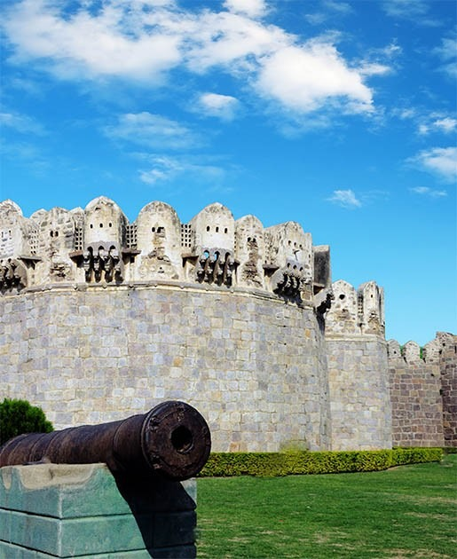

Standing tall for over 500 years, the mighty Balahisar Fort is not just a historical monument—it’s a silent witness to empires, warriors, and the ever-changing tides of time. With its towering red-brick walls and imposing structure, this fortress has guarded the city of Peshawar through the reigns of the Mughals, Sikhs, and British colonizers.
Mughal Grandeur: Emperor Babar himself mentioned Balahisar in his memoirs, the Baburnama, after capturing it in the 16th century. Later,Akbar rebuilt it into a formidable military stronghold.
Sikh Rule & the "Tower of Skulls": The fierce Sikh ruler Ranjit Singh used Balahisar as a power symbol. Legend says his general, Hari Singh Nalwa, hung the heads of enemies on the fort’s spikes—earning it a terrifying reputation.
British Era & the Queen’s Own Corps: When the British took over, they turned Balahisar into their frontier command center. Even today, it serves as the
Balahisar isn’t just a fort—it’s Peshawar’s beating heart, where every brick whispers stories of glory, blood, and resilience.

Ready to walk through the door of legends?
Standing in Peshawar, where the dusty plains meet the rugged mountains, Jamrud Fort has been the city’s first line of defense for centuries. This formidable fortress guards the eastern entrance of the Khyber Pass —the legendary gateway that has shaped Peshawar’s destiny as a city of warriors, traders, and empires.
Ready to walk through the door of legends?
He who holds the Khyber, holds the key to the subcontinent." — Ancient Proverb
Standing proudly at the entrance of the mighty Khyber Pass, Bab-e-Khyber is more than just an arch—it’s a symbol of Pakistan’s rugged frontier spirit. Built in 1964, this monumental gate marks the beginning of one of the world’s most famous mountain passes, a historic corridor that has shaped empires, wars, and trade for over 2,000 years.
Peshawar’s Pride: Just a short drive from the city, the arch connects Peshawar—Pakistan’s oldest living city—to the wild tribal frontiers and beyond. It represents the cultural and historical bridge between the settled areas and the legendary Pashtun heartland.
Gateway to Empires: The Khyber Pass has been the invasion highway for conquerors like Alexander the Great, Mughal emperors, and British forces. Bab-e-Khyber stands as a modern monument to this ancient legacy. Passage Through Time: From Silk Road caravans to Soviet tanks retreating from Afghanistan, the Khyber Pass has seen it all—and Bab-e-Khyber is its grand welcome sign.Bab-e-Khyber isn’t just a landmark—it’s where Pakistan’s history begins and adventure unfolds.
Ready to walk through the door of legends?
Peshawar, one of South Asia’s oldest living cities, was once encircled by a fortified wall with seven iconic gates. Each gate served as a vital entry point, connecting the city to trade routes, cultural hubs, and neighboring regions. Though many have vanished over time, their legacy remains embedded in Peshawar’s history and identity.
Here are the 7 gates of Peshawar:
Kabuli Gate, North West Frontier, 1905 – Opened towards Kabul, Afghanistan.
Built during Mughal rule and later modified by Sikhs, this was Peshawar's main gateway to Kabul and Central Asia, serving traders and travelers along the Grand Trunk Road.
While the original structure is gone, Kabuli Bazaar preserves its legacy as a vibrant market for Afghan goods and culture.
The area around Kabuli Gate evolved into a bustling marketplace known as Kabuli Bazaar, famous for Afghan goods, dry fruits, carpets, and imported items.Even today, the Kabuli area is known for its Afghan population and commerce.

Lahori Gate – Faced towards Lahore. Historic eastern passage linking Peshawar with Lahore.
Like the other six gates, Lahori Gate was part of the fortified city wall built during the Mughal era, and later modified by Sikh rulers.It was one of the major exit/entry points for people traveling eastward, especially toward the Punjab region.
Mughal-style arched gateway with defensive towers.
Commercial hub with thriving textile and food bazaars.
Cultural bridge between western and eastern regions.
Like most other historical gates of Peshawar, the original structure of Lahori Gate no longer exists due to urban expansion and neglect over centuries.However, the area is still known as Lahori Gate or Lahori Chowk in local references.
The gate likely featured arched Mughal-style architecture with strong wooden doors, flanked by watchtowers or bastions.It was manned by guards to control access to the city and ensure safety.

Named after the nearby Hindu Asamai Temple, this historic gate symbolizes Peshawar’s religious diversity. Unlike other gates tied to trade or defense, Asamai Gate held spiritual importance, serving as a passage for devotees visiting the goddess Asamai’s temple.
Located on Peshawar’s northern side, near the Kabul River, the gate connected the walled city to the temple. The surrounding area was a hub for Hindu and Muslim communities, reflecting Peshawar’s multicultural past.
The gate was a key entry point for pilgrims visiting the Asamai Temple, a major Hindu worship site. It facilitated religious processions and festivals, strengthening communal bonds in the city.
Built with brick and stone, the gate featured a sturdy arched entrance typical of Mughal design. Though simpler than gates like Kabuli Gate, it served both defensive and spiritual purposes.
The original gate no longer exists, but its legacy lives on in Asamai Bazaar. The temple’s memory endures, reminding Peshawar of its rich, diverse heritage.

Yakka Toot Gate – Also known as the "One Mulberry Tree" gate.
Named after a lone mulberry tree ("Yakka Toot" in Pashto/Persian), this gate stood out for its natural landmark rather than a functional or military purpose.
Situated on Peshawar’s northeastern side, it connected the walled city to nearby villages, serving locals, farmers, and small traders rather than major caravans.
Built during the Mughal era, it was part of Peshawar’s defensive walls and remained functional under Sikh and British rule, though less prominent than gates like Kabuli or Lahori.
A hub for everyday life, it shaped the surrounding community—now a neighborhood still called Yakka Toot, preserving its legacy.
Likely a modest Mughal-style gate with an arched entrance and wooden doors, blending utility with local identity.
Today, the physical structure of Yakka Toot Gate no longer exists. The gate is gone, but its name endures in the area’s streets and landmarks, a quiet reminder of Peshawar’s layered history.

Named after Kohat city, this southern gate connected Peshawar to trade routes through the Kohat Pass. Its practical name reflects Peshawar's gate-naming tradition based on destinations.
Situated on Peshawar's southern wall, it served as a key passage to Kohat and tribal areas, facilitating trade, travel, and military movement for centuries.
Kohati Gate was more than a passageway—it became a vibrant commercial hub for traders, farmers, and artisans. Merchants from southern cities and tribal regions entered the city through this gate, bringing goods like grains, livestock, fruits, and traditional crafts. It also became a residential area, with the development of small markets, mosques, and community spaces. Travelers and traders would find rest houses and food stalls nearby, making it a lively zone both day and night. The local population around the gate contributed to its atmosphere, as generations lived and worked in the area. Over time, this blend of trade and community life helped define Kohati Gate as a culturally rich and socially active part of old Peshawar.
Kohati Gate once stood as a classic Mughal structure with a brick archway, defensive towers, and iron-reinforced wooden doors. Though lost to urban growth, its spirit survives in the bustling Kohati neighborhood. Modern shops now occupy spaces where caravans once passed, maintaining the area's commercial heartbeat while colonial-era buildings whisper of its past.
Today, though the gate is gone, the Kohati area remains a vibrant commercial hub, preserving the mercantile energy that once flowed through its arches. Its name still echoes Peshawar's history as a crossroads of trade and culture

Named after the Persian word for "treasure" or "market," Ganj Gate reflected its role as a bustling commercial entry point to Peshawar's walled city. Situated on the southeastern side, it connected urban markets with surrounding residential and agricultural areas.
Built during the Mughal era and used through Sikh and British rule, this gate served as a vital local trade passage rather than a military stronghold. Unlike grander gates, Ganj Gate thrived as a neighborhood hub, regulating the flow of goods and people to sustain Peshawar's daily economy.
The gate opened into Ganj Bazaar, a vibrant marketplace where vendors sold spices, textiles, and crafts. While its arched Mughal-style structure (with iron-studded wooden doors) is now lost, the area remains a thriving commercial district.
Today, the enduring name "Ganj" preserves the memory of this gateway, where Peshawar's mercantile spirit still thrives in its modern shops and crowded lanes.

Named after the Persian "Cold Well," this gate marked a vital freshwater source for historic Peshawar. Its cool waters provided relief during scorching summers.
Positioned on Peshawar's northwestern wall, it connected the city to surrounding villages. Farmers and travelers relied on its well before entering the city.
Built during Mughal rule, the gate served daily needs for centuries. British records noted its refreshing well as a welcome rest stop.
The well became a social hub where women collected water and neighbors exchanged news. A small local market developed nearby for daily essentials.
The gate featured practical Mughal design - a brick archway with wooden doors. Stone steps likely surrounded the well for easy water access.
While gone today, the Sard Chah name survives in local memory. It reminds us how water sources shaped Peshawar's community life.
Ready to walk through the door of legends?